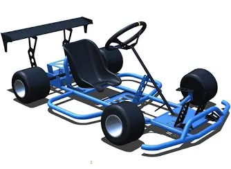
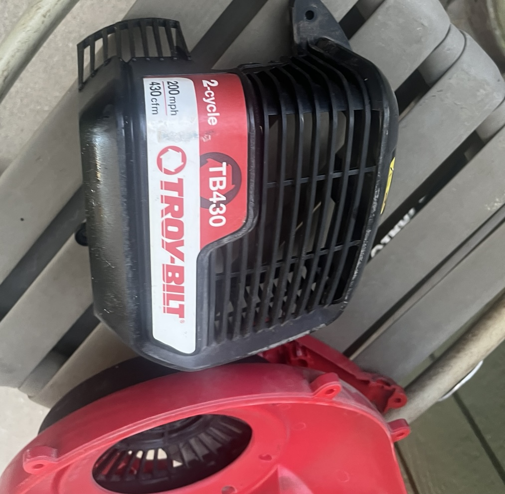
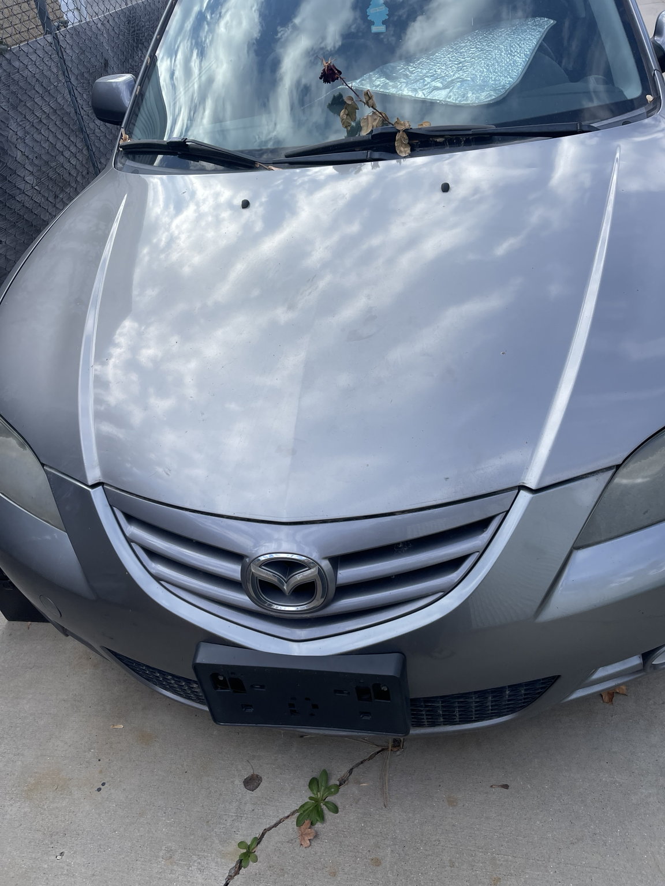
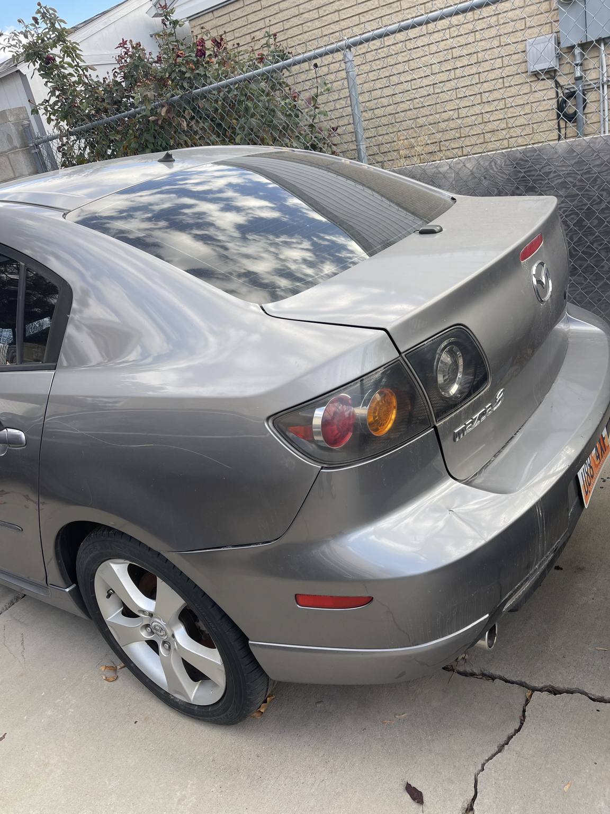
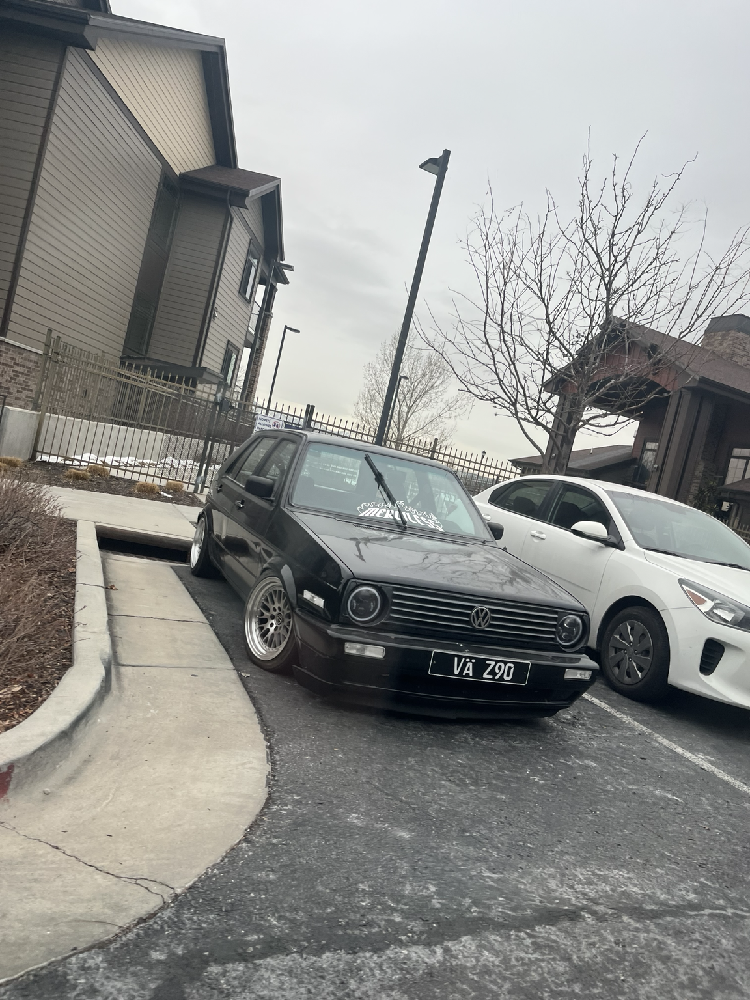
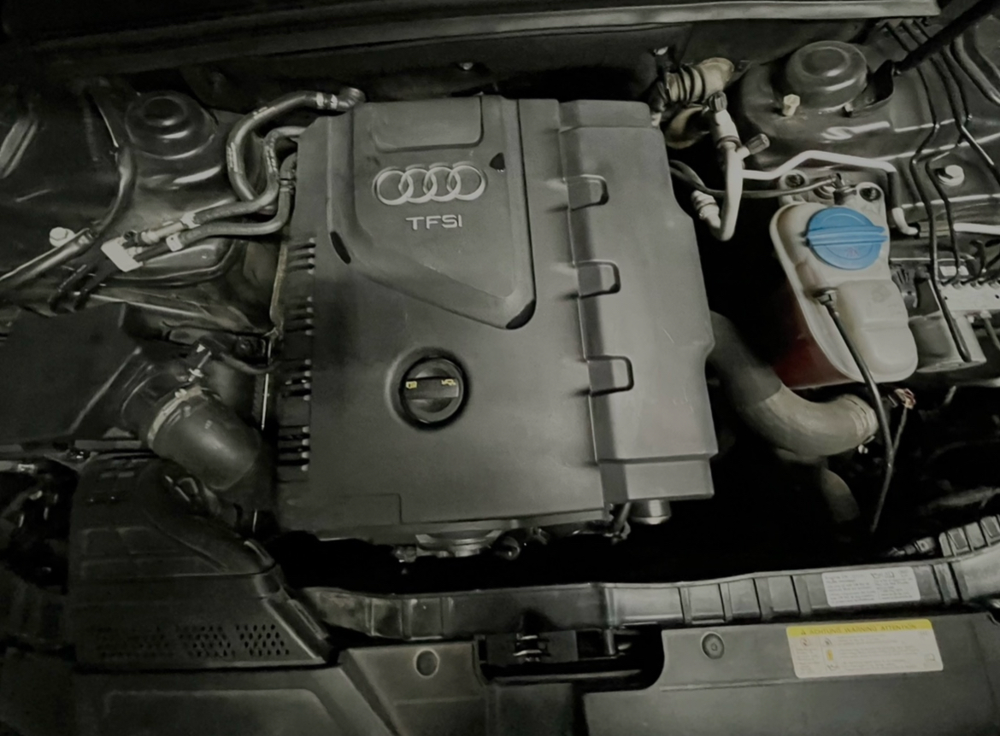
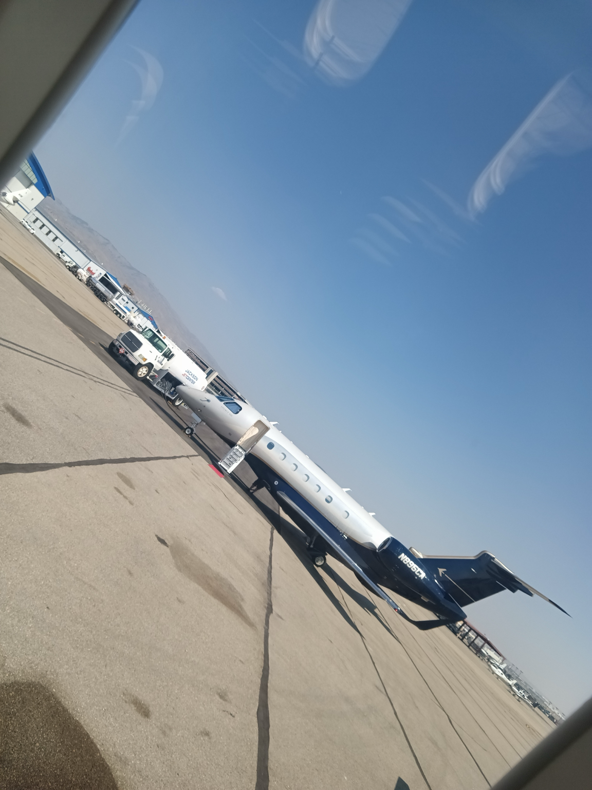
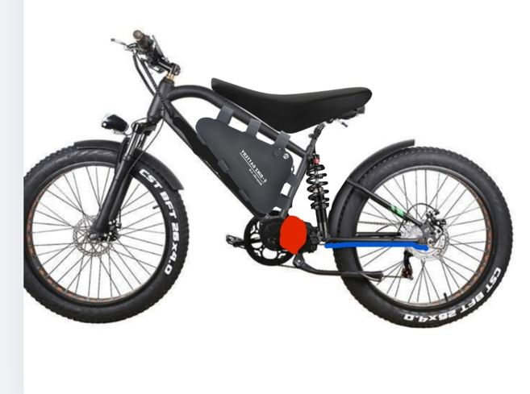

Cars & Engines
I enjoy learning about vehicles, engine bays, parts, performance, and how different systems work together inside a car. I like the combination of mechanics, design, and problem solving that comes with understanding vehicles.
I’m a 14-year-old student and builder with a strong interest in cars, engines, electric bikes, and hands-on mechanical work. I enjoy learning how systems function, how different parts connect together, and how real problems can be solved through patience, practice, and experience. I am especially interested in projects that help me improve my practical skills and give me more understanding of how machines work in the real world.
About
A more complete overview of who I am, what I enjoy learning about, and the kind of work I want to keep building toward in the future.
My name is Michael Bennett, and I am 14 years old. I enjoy learning about cars, engines, mechanics, and engineering because I like understanding how things work and how they can be improved. I am interested in both the mechanical side of projects and the problem solving that comes with them. One of the things I like most is being able to look at a system, figure out how the parts work together, and learn from the process of fixing or improving it.
I am especially interested in engine-related projects, electric bikes, and hands-on mechanical work. I like learning by doing real projects instead of only reading about them. Working with actual parts, tools, and systems helps me understand more and improve faster. I want to keep building practical experience so I can become more skilled, more confident, and more knowledgeable in the future.
Strengths
These are the areas I am most interested in right now and the kinds of skills I want to continue developing.
I enjoy learning about vehicles, engine bays, parts, performance, and how different systems work together inside a car. I like the combination of mechanics, design, and problem solving that comes with understanding vehicles.
I enjoy learning about motors, batteries, wiring, controllers, throttles, and the way electric systems connect together. E-bikes are interesting to me because they combine mechanical and electrical knowledge in a practical way.
I like hands-on projects where I can work with tools, learn new systems, and improve my understanding of how machines and parts actually function in real life.
I learn best through real experience. When I get to work directly on a project, I understand it better, remember more, and build stronger skills than I would by only reading about it.
Goals
These are the main goals I want to continue working toward as I gain more experience and grow my skills.
I want to continue learning more about cars, engines, electric systems, and mechanical projects while gaining more experience through real hands-on work. My goal is to become more confident and capable with every project I take on.
I want to keep learning about cars, engines, mechanics, tools, and engineering so I can better understand the systems I work on.
I want to work on more advanced projects over time and challenge myself with builds that help me improve my skill level.
I want to turn my interests now into real skills that I can use later in life, whether that is through work, projects, or future goals.
This page gives a more detailed look at the kinds of projects, systems, and hands-on work that I am most interested in learning from.
Project Areas
These are the kinds of builds and project areas I enjoy because they help me understand more about how machines and systems work.
I like learning about e-bike motors, batteries, throttles, wiring, controllers, and upgrades. I enjoy understanding how each part works together and how changing one part can affect the rest of the system.
Electric BikesI’m interested in engines, engine bays, parts, and how mechanical systems fit together. I like learning what different components do, how they connect, and how builds can be improved.
EnginesI enjoy projects that involve fixing problems, using tools, understanding systems, and building more hands-on experience. These types of projects help me improve practical knowledge.
MechanicsI want to keep improving my skills and work on more advanced builds as I learn more over time. Every project is a chance for me to get better.
Future GoalsProfessional Style
This is the mindset I try to bring to the things I work on and learn from.
I like figuring things out by working on real projects, testing ideas, solving problems, and understanding how parts actually go together. That is the way I learn best and improve the fastest.
I enjoy learning how to fix issues and understand why systems work the way they do instead of only guessing.
I like understanding parts, layouts, and how systems connect together so I can see the full picture of a build or repair.
I want every project to help me become more knowledgeable, more experienced, and more capable in the future.
This page focuses on the abilities I am developing, the strengths I already use, and the skills I want to keep improving over time.
Current Strengths
These are some of the main skills and strengths I am working on through my interests and projects.
I learn best by directly working on projects, using tools, and seeing how things function in real life. This helps me build stronger practical understanding.
I am building knowledge about how parts, systems, and machines connect together and how they can be repaired or improved.
I enjoy figuring out what is wrong, looking at the system carefully, and working through the problem step by step.
Every project gives me more experience, and I want to keep building from smaller jobs into bigger and more advanced work.
Next Steps
These are the areas I want to keep getting better at as I gain more experience.
I want to keep getting stronger in mechanics, tool use, electrical systems, and project planning so I can handle bigger and more advanced work in the future.
I want to better understand how different mechanical systems work and how to repair them with more confidence.
I want to learn more about wiring, power systems, and how electric parts connect together.
I want to keep building experience by taking on new projects and learning more from real work.
Photos of my cars, engines, builds, and projects.







